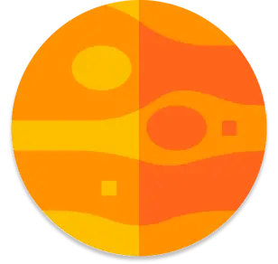
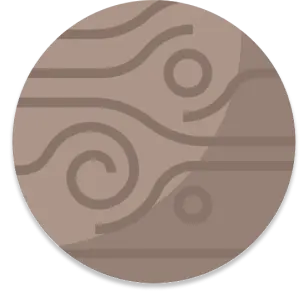
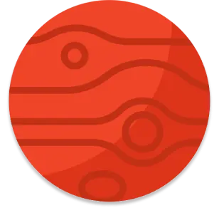
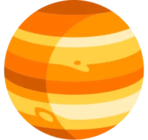
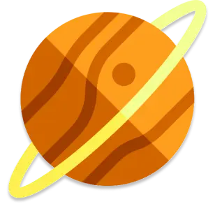
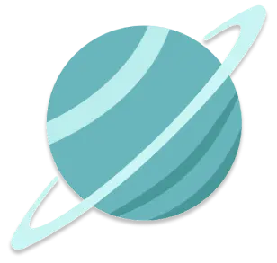
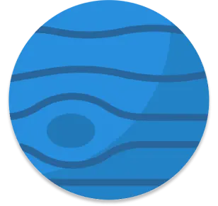

Mercure
Mercure est la planète la plus proche du Soleil et la plus petite du système solaire. Elle n'a pas d'atmosphère significative, ce qui provoque des variations extrêmes de température. Son orbite est très elliptique, et elle met environ 88 jours terrestres pour faire un tour complet autour du Soleil.

Vénus
Vénus, deuxième planète du système solaire, est souvent appelée "sœur de la Terre" en raison de sa taille similaire. Son atmosphère dense est composée principalement de dioxyde de carbone, créant un effet de serre extrême et des températures pouvant atteindre 465°C. Elle orbite autour du Soleil en 225 jours terrestres.
La Terre
La Terre est la troisième planète du système solaire et la seule connue à abriter la vie. Sa surface est composée de continents et d'océans, avec une atmosphère riche en azote et oxygène. Elle orbite autour du Soleil en 365,25 jours, avec un climat et des saisons variés grâce à son inclinaison axiale.

Mars
Mars, quatrième planète du système solaire, est surnommée "la planète rouge" en raison de la couleur de sa surface, due à l'oxyde de fer. Elle possède des montagnes et des vallées, ainsi que des calottes polaires de glace. Mars a une atmosphère mince et froide, composée principalement de dioxyde de carbone. Elle orbite en 687 jours terrestres.

Jupiter
Jupiter, la plus grande planète du système solaire, est une géante gazeuse composée principalement d'hydrogène et d'hélium. Elle possède une atmosphère avec des bandes nuageuses colorées et la célèbre Grande Tache Rouge, un gigantesque cyclone. Jupiter a 79 lunes et une orbite de 12 ans terrestres.

Saturne
Saturne, la sixième planète du système solaire, est une géante gazeuse célèbre pour ses impressionnants anneaux composés de glace et de roches. Elle est principalement constituée d'hydrogène et d'hélium, et possède 83 lunes confirmées. Saturne orbite autour du Soleil en environ 29,5 ans terrestres.

Uranus
Uranus, la septième planète du système solaire, est une géante glacée caractérisée par sa couleur bleue due à la présence de méthane dans son atmosphère. Elle est inclinée sur le côté, avec un axe de rotation presque parallèle à son orbite. Uranus possède 27 lunes et orbite autour du Soleil en 84 ans terrestres.

Neptune
Neptune, la huitième et dernière planète du système solaire, est une géante glacée au bleu profond, également dû au méthane. Son atmosphère est marquée par des vents extrêmement rapides et des tempêtes comme la Grande Tache Sombre. Neptune possède 14 lunes et met environ 165 ans terrestres pour orbiter autour du Soleil.